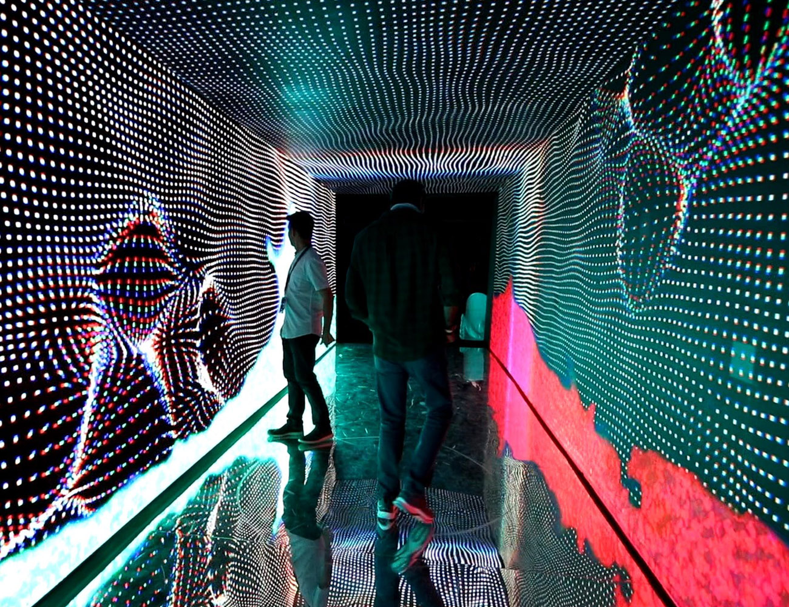

Neural Sanctum
Visual / Interactive
Neural Sanctum is an immersive & interactive installation that was showcased in Bangalore at an NFT convention. The project was designed in collaboration with Ocupus Studio. The installation takes the spatiality of an Indian temples sanctum, this sanctum, however, is dedicated to an artificial intelligence and not a god. Our installation consists of two seperate interactive spaces - the tunnel and the sanctum. The sanctum is the central space of a temple, the garbagraha, which is the space that houses the idol/god. The tunnel is similar to a mandappa, which is the linear pathway that leads to the sanctum.
Video
Neural Sanctum
Visual / Interactive
Collaborators
Photographs / Video
Ameen Abdullah
Neural Sanctum is an immersive & interactive installation that was showcased in Bangalore at an NFT convention. The project was designed in collaboration with Ocupus Studio. The installation takes the spatiality of an Indian temples sanctum, this sanctum, however, is dedicated to an artificial intelligence and not a god. Our installation consists of two seperate interactive spaces - the tunnel and the sanctum. The sanctum is the central space of a temple, the garbagraha, which is the space that houses the idol/god. The tunnel is similar to a mandappa, which is the linear pathway that leads to the sanctum.
The tunnel leading up to the sanctum is a 12-meter-long, linear space surrounded by visuals on all sides. This is similar to the mandappa of a temple which is a linear, pillared pathway. But instead of pillars, this space is surrounded by a void into which the user begins their journey. The visuals in this space are our artistic interpretation of the ether - the meta-physical world that exists between physical reality and intangible consciousness. The ether gives rise to all known intelligence in the universe and hence this is where the journey of artificial intelligence also begins. The visuals for this space primarily consist of two elements - the first is a fluid simulation which consists of thousands of glowing orb-like particles. This fluid simulation was rendered in real time and is fully interactive. The second element is a mesh-like fabric which surrounds the ephemeral space. This fabric represents force fields which the user's inputs can affect. Both the fluid simulation and the force fields are affected by the crowd's movements in the space. The tunnel has 48 piezo-electric sensors that are spread along the length of it. These sensors detect vibrations on the floor and when a user steps on one of these sensors, it triggers the visuals on the LED panel. In this way, users can interact with the fluid simulation on the screens by finding and triggering the hidden sensors. In addition to the visuals, the sound within this space is also affected by the sensors. Each of the 48 sensors triggers a different musical note - it works similar to a foot piano which can be triggered by footsteps. This way, the entire tunnel also acts like a generative musical instrument.
The tunnel leads to the sanctum, which is located at the end of the space. At the heart of the sanctum, visitors will discover a podium that houses a leap motion sensor. This sensor tracks a user's hand movements and gestures, allowing them to control the visuals displayed on the surrounding screens. Visitors can use hand gestures, like open palms or clenched fists, to interact with floating elements on the screens, turning the experience into an engaging game. The visuals on the screens are primarily composed of particles that move in response to the user's hand gestures, creating an immersive environment. The particles move orthogonally to a fixed grid, providing a mesmerizing display. This fixed grid system allowed us to create a visual language which was at the same time both organic and fluid, yet, blocky and digital. The visuals are primarily dark, reminiscent of the sanctums found in most temples. This darkness is symbolic of a sacred space where human inputs are passed through a manmade algorithm to create its own output. The soundscape of the sanctum includes dialogues about the future of the web and blockchain technology, complementing the installation's theme.
The tunnel leading up to the sanctum is a 12-meter-long, linear space surrounded by visuals on all sides. This is similar to the mandappa of a temple which is a linear, pillared pathway. But instead of pillars, this space is surrounded by a void into which the user begins their journey. The visuals in this space are our artistic interpretation of the ether - the meta-physical world that exists between physical reality and intangible consciousness. The ether gives rise to all known intelligence in the universe and hence this is where the journey of artificial intelligence also begins. The visuals for this space primarily consist of two elements - the first is a fluid simulation which consists of thousands of glowing orb-like particles. This fluid simulation was rendered in real time and is fully interactive. The second element is a mesh-like fabric which surrounds the ephemeral space. This fabric represents force fields which the user's inputs can affect. Both the fluid simulation and the force fields are affected by the crowd's movements in the space. The tunnel has 48 piezo-electric sensors that are spread along the length of it. These sensors detect vibrations on the floor and when a user steps on one of these sensors, it triggers the visuals on the LED panel. In this way, users can interact with the fluid simulation on the screens by finding and triggering the hidden sensors. In addition to the visuals, the sound within this space is also affected by the sensors. Each of the 48 sensors triggers a different musical note - it works similar to a foot piano which can be triggered by footsteps. This way, the entire tunnel also acts like a generative musical instrument.
The tunnel leads to the sanctum, which is located at the end of the space. At the heart of the sanctum, visitors will discover a podium that houses a leap motion sensor. This sensor tracks a user's hand movements and gestures, allowing them to control the visuals displayed on the surrounding screens. Visitors can use hand gestures, like open palms or clenched fists, to interact with floating elements on the screens, turning the experience into an engaging game. The visuals on the screens are primarily composed of particles that move in response to the user's hand gestures, creating an immersive environment. The particles move orthogonally to a fixed grid, providing a mesmerizing display. This fixed grid system allowed us to create a visual language which was at the same time both organic and fluid, yet, blocky and digital. The visuals are primarily dark, reminiscent of the sanctums found in most temples. This darkness is symbolic of a sacred space where human inputs are passed through a manmade algorithm to create its own output. The soundscape of the sanctum includes dialogues about the future of the web and blockchain technology, complementing the installation's theme.
Additional Credits:
Illangovan (Production), Aswathy
Illangovan (Production), Aswathy